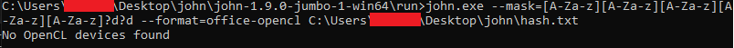
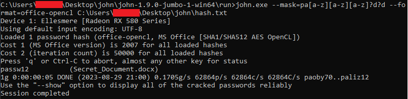

First we need to create hash of the file and this can be made with one of John's scripts written in Python under \run\office2john.py. When you have Python installed just type in cmd:
python <path to office2john.py> <path to Office file> > <path to file where hash has to be saved>
When we have the hash file we can start hacking. John has a lot of options which can be checked in documentation or invoked with --help. For my case I got some advices what the password could be, so I could create some pattern/mask to significantly shorten the hacking time. It looked like this:
 To fix this we need to edit the file \etc\OpenCL\vendors\amd.icd with the default path pointing to c:\Windows\System32\amdocl64.dll (there is also naturally nvidia.icd file with the default path c:\Windows\System32\nvopencl.dll) and we need to edit it by finding first proper path for this file, anyway look for it under c:\Windows\System32. After fix we can go further:

john.exe --mask=[a-z][a-z][a-z][a-z][a-z]?d?d --format=office-opencl C:\Users\Bill\Desktop\john\hash.txt
..and succesfully crack the password: Just please notice I changed the mask to make it faster :). Correct password is passw12. Also worth attention is that we can press 'q' or Ctrl-C to quit and use any other key to show the cracking status. If you want to play with different options for the same hash, compare CPU vs GPU cracking speed etc. you need to delete the corresponding log from the file \run\john.pot as john will inform you it has been already hacked.